The data exist.
They are scattered.
High-mountain municipalities regulate water, form soil, store carbon and connect habitats, yet many lack an operational monitoring system.
Information sits in IGAC, IDEAM, the Ministry of Environment, UPRA and GBIF, organized by institution rather than by municipality.
How can a map viewer that integrates official layers, soil degradation, GBIF data and participatory protocols become a reproducible baseline for an underrepresented Andean territory?
Colombia
High-mountain municipalities of the Eastern Cordillera.
123 municipalities
IGAC municipal boundaries · Table II.
Sotaquirá
Central Province of Boyacá, about 39 km northwest of Tunja.
30 veredas
DANE veredas reference level 2024; municipal sources report 26 by grouping four of them. Same territory.
Two páramo complexes
Sotaquirá
Two páramo complexes, Guantiva–La Rusia and Iguaque–Merchán, sit above a rural economy of cattle ranching and agriculture.
Sixteen Andean taxa fall onto the map
Museum, herbarium and citizen-science records reach GBIF in different formats. This is the regional selection integrated in the viewer.
Every layer,
one boundary.
Records without useful coordinates and duplicates are removed. Each source is clipped to DANE code 15763 and reprojected to a common reference system.
Three levels,
no map server.
1 · Sources IDEAM, IGAC, UPRA, MinAmbiente, GBIF, DANE, NASA HLS.
2 · QGIS clip, reproject, point-in-polygon overlay, categorize, export GeoJSON.
3 · Leaflet client static GeoJSON on plain hosting, fed back by community monitoring.
Seven stages.
A cycle, not a line.
Acquisition, cleaning, harmonization, integration, publication, local consultation and participatory monitoring. New community data re-enter the system as GeoJSON.
of the municipality under water erosion, 17,764.27 ha. Classes VII and VIII, the most restrictive, cover 71.74 %, 20,422.01 ha.
Production inside the páramo
Green: páramos. Ochre: agricultural territories. Red: where they overlap, 25.72 % of the páramo area in the municipality; 47.19 % of Guantiva–La Rusia.
Sotaquirá is not a territory without data, but one whose information was fragmented across collections, citizen science and institutions.
Sources: museum and herbarium collections, citizen science such as iNaturalist, institutional databases.
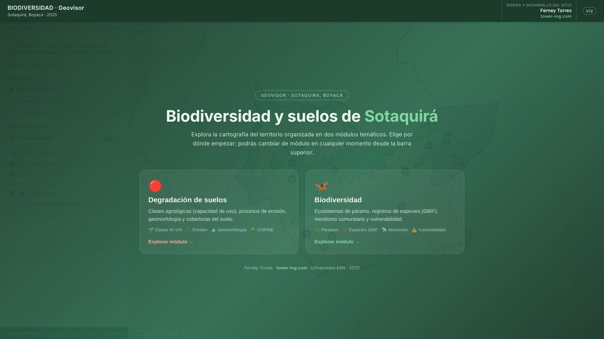
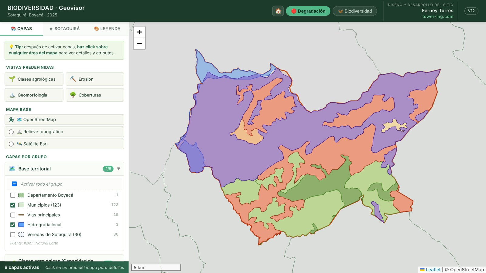
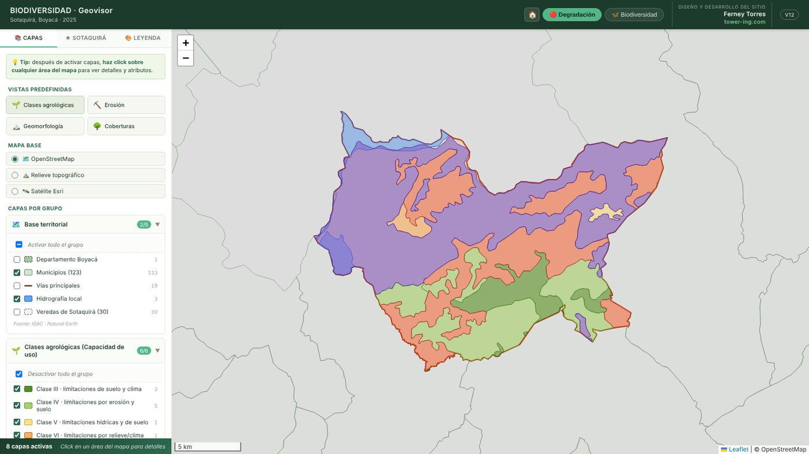
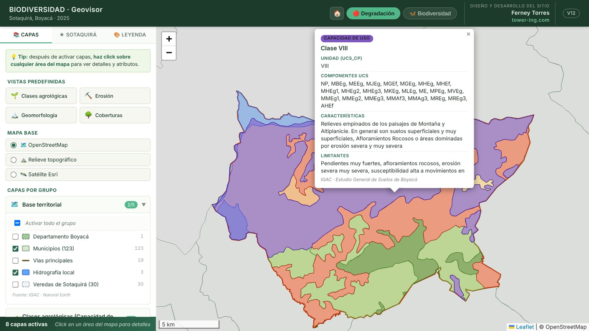
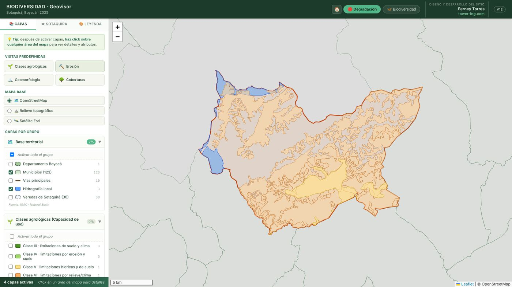
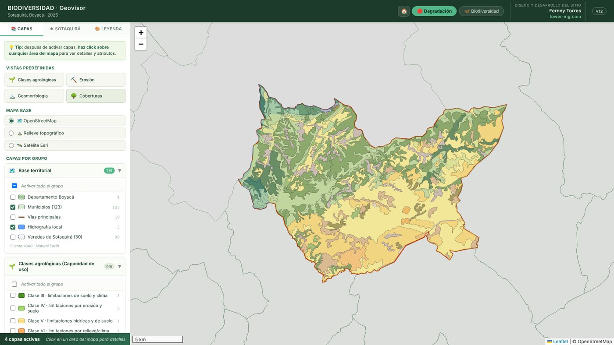
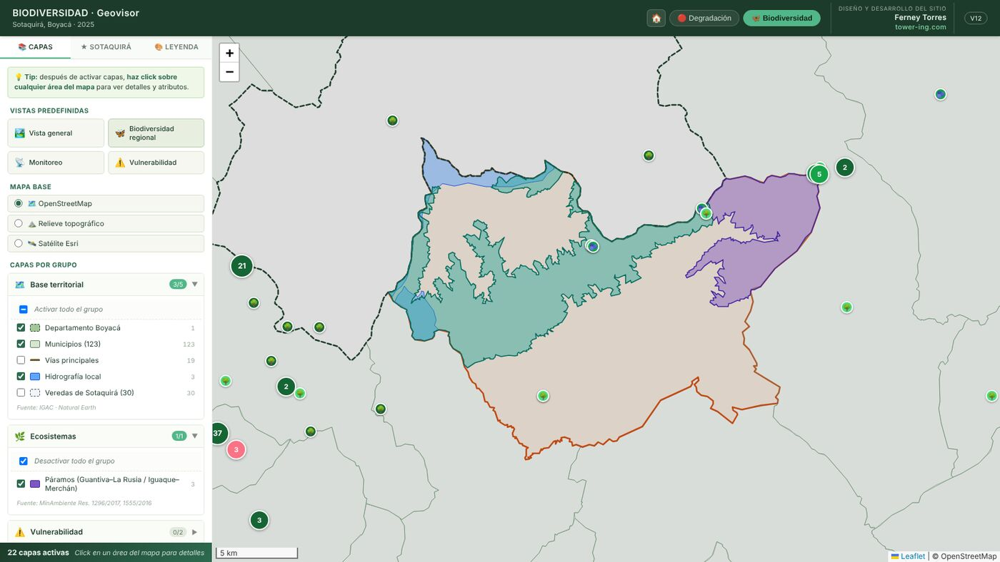
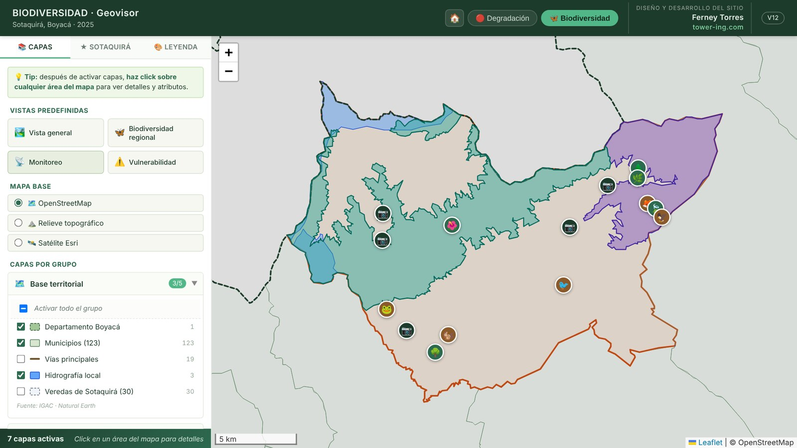
The community
closes the cycle.
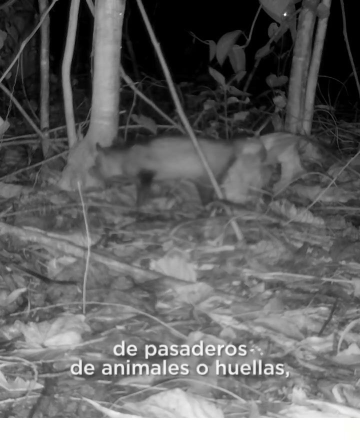
installing a camera trap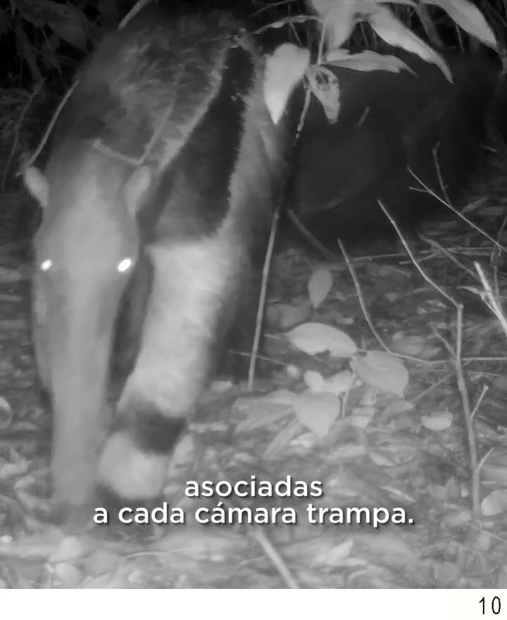
passive station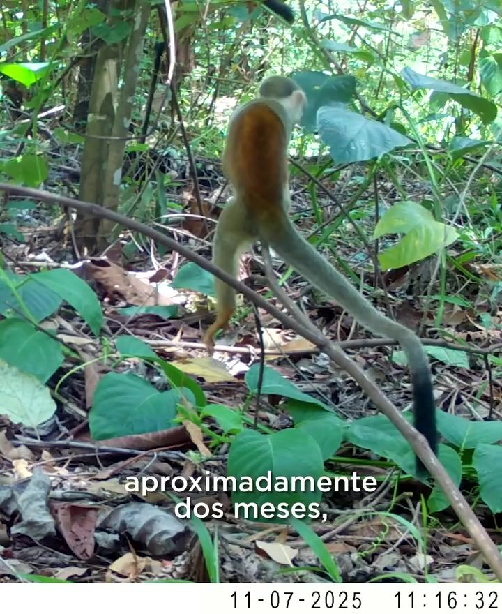
night recordWhat a map does not show
One file.
No map server.
Code, GeoJSON layers, area script and audit report under tag v1.0-amitic2026.
Limitations
- Several layers are not yet validated in systematic field campaigns.
- NDVI is indicative, not a calibrated degradation index.
- GBIF records depend on sampling effort and accessibility.
- 1:100,000 cartography: municipal, not parcel, precision.
- One municipality; the access-effort reduction is not yet measured.
New data feed back.
Monitoring produces GeoJSON-compatible records that return to the layers, and the cycle starts again.